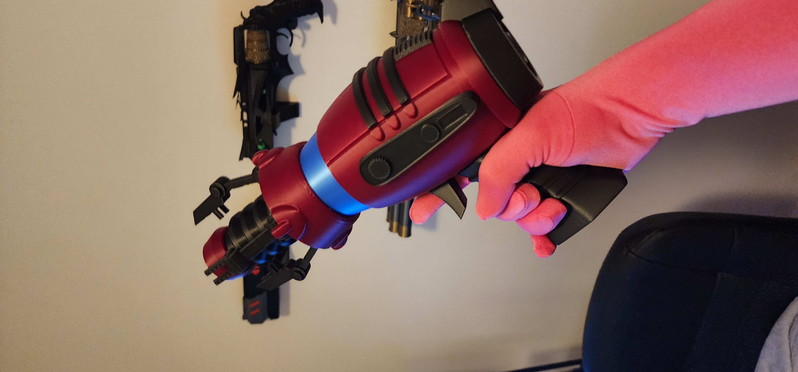
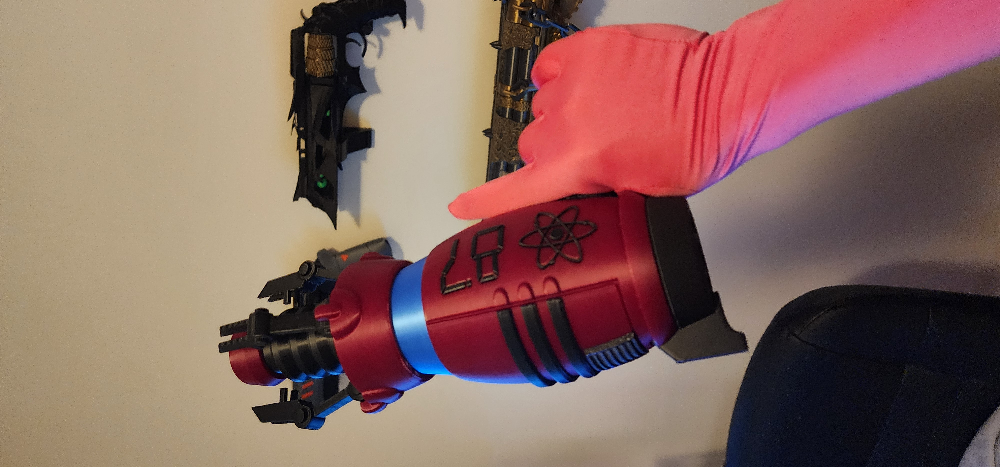
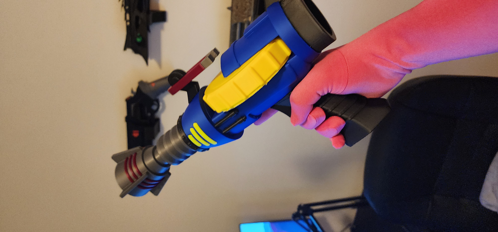
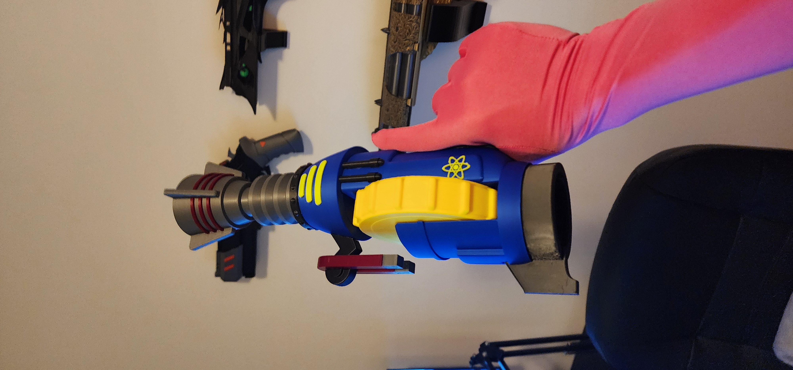
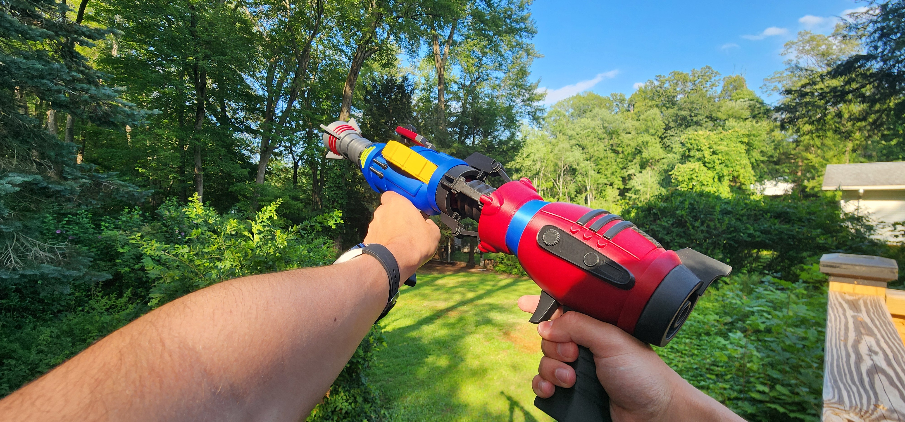
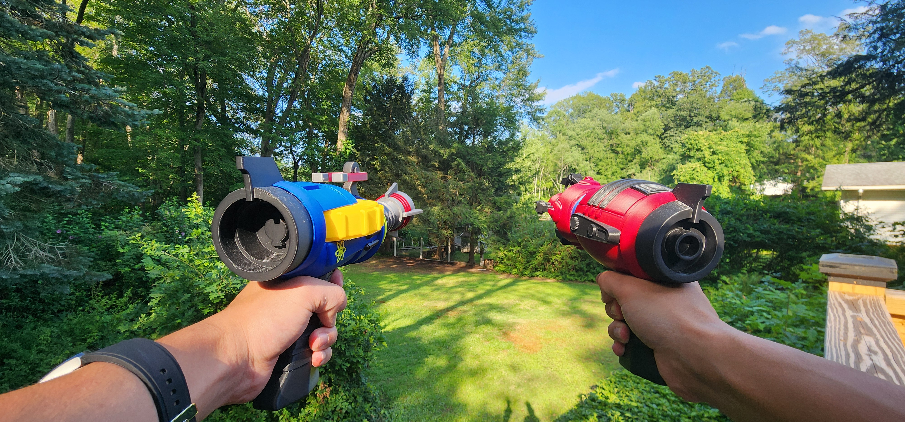

Wave Gun (Zap Gun Dual Wield) from "Call of Duty: Black Ops Zombies"
January 2025

This project is nothing too special. Both guns are easy to print and assemble. I did not know how to paint my prints at the time of making this. If I were to do it again, I would try a paint finish.
This model was found on Sliceables Patreon
Extra pictures from the design process





